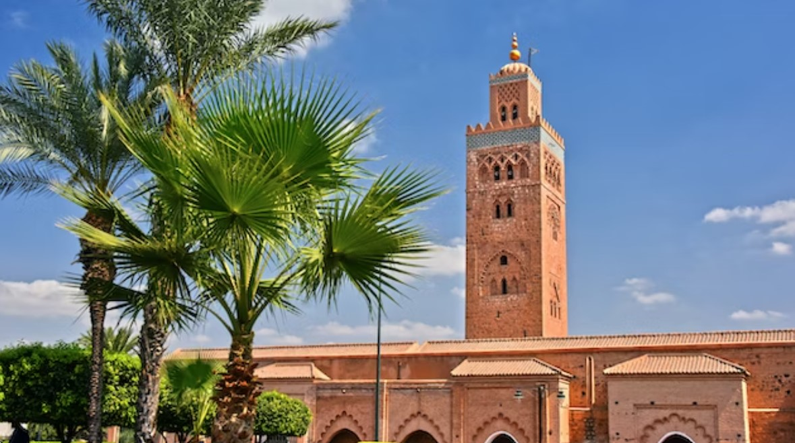
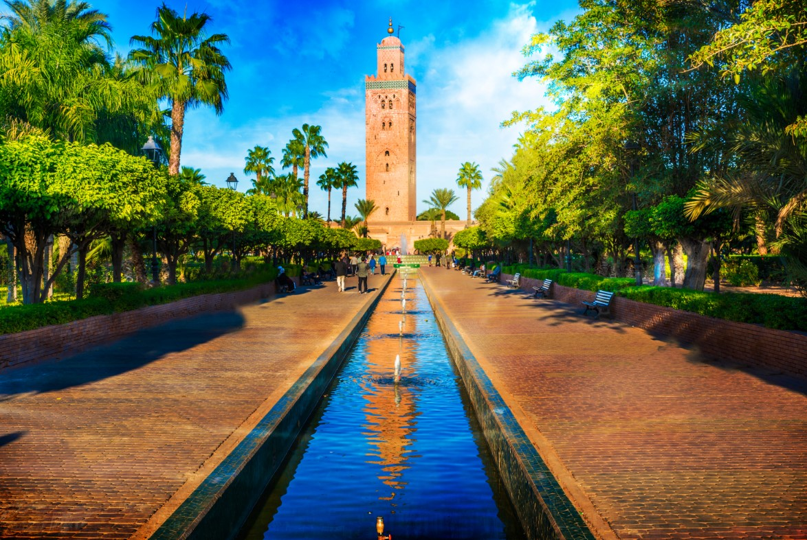
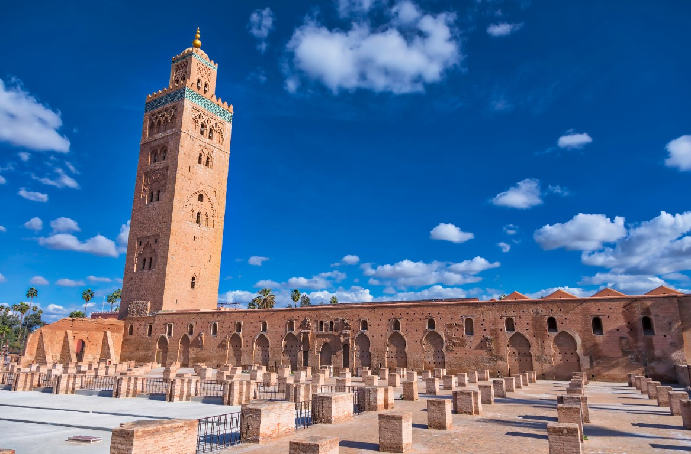
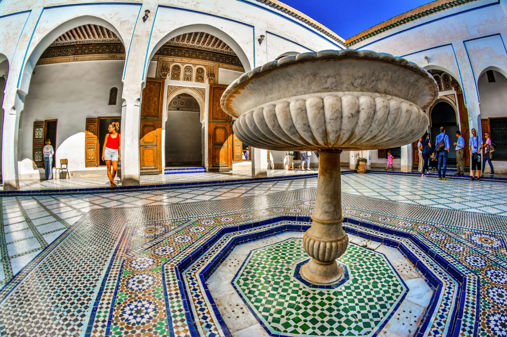

Place To Go
Place To Go
Koutoubia Mosque
Koutoubia Mosque is just outside of the Marrakesh medina walls, a short walk from Djemaa El Fna square. Marrakesh's biggest concentration of budget hotels is in this area, most only a stone's throw from the square, along Rue Sidi Bouloukat and Rue de la Recette (easy walking distance from both the airport bus and taxi drop-off points). Upmarket riad accommodation is found off Rue Riad Zitoun El Jedid.
Koutoubia Mosque architecture
Another Marrakshi legend tells that the pious Almohads had the original mosque felled halfway through building because it wasn’t properly aligned with Mecca. Exact dates of construction are murky.
Ruins of the Koutoubia Mosque prayer hall
On the northwestern side of the Koutoubia Mosque minaret are the ruins of the original prayer hall. One story goes that it collapsed during the massive 1755 Lisbon earthquake, killing hundreds of people as it crumbled. Research suggests this could be plausible. To the north of the Koutoubia minaret, the original doorway still stands. On the far wall of the ruins the remains of the arches that would have held up the ceiling are visible. The stumps on the floor are the hall's columns, and they stay in situ as a memorial.
Welcome to the Bahia Palace
The Bahia Palace is a 19th century building, consisting of rooms decorated with stunning stuccos, paintings and mosaics palace and a set of gardens located in Marrakech, Morocco. The Bahia Palace was intended to be the greatest palace of its time. The name of the Bahia Palace means in Arabic “brilliance”. As in other buildings of the period in other countries, it was intended to capture the essence of the Islamic and Moroccan style. There is a 2-acre (8,000 m²) garden with rooms opening onto courtyards in the Bahia Palace.
he Bahia Palace was Set up at the end of the 19th century by Si Moussa, grand vizir of the sultan, for his personal use, the Bahia palace would bear the name of one of his wives. Here, the harem, which includes a vast court decorated with a central basin and surrounded by rooms intended for the concubines. As the black slave Abu Ahmed rose to power and wealth towards the end of the 19th century, he had the Bahia palace built by bringing in craftsmen from Fez.
When Morocco gained independence from France in 1956, the Bahia palace was used as a royal residence, until King Hassan II transferred it to the custody of the Moroccan Ministry of Culture, so the building could serve as a cultural icon and tourist attraction.
The Bahia palace is divided into different rooms such as the Hall for businesses and administrative purposes; the 4 rooms for his wives which are equal in size, meaning all 4 wives are equal in status; the quarter for his 24 concubines, with 12 rooms to share (2 concubines in 1 room) and a dining room; the School, where Abu’s sons and daughters are taught by their teachers and turned into a mosque 5 times a day for praying; and Abu’s own quarters, where there is his summer room with windows and a smaller one for winter without any windows, as well as his very own private dining room.